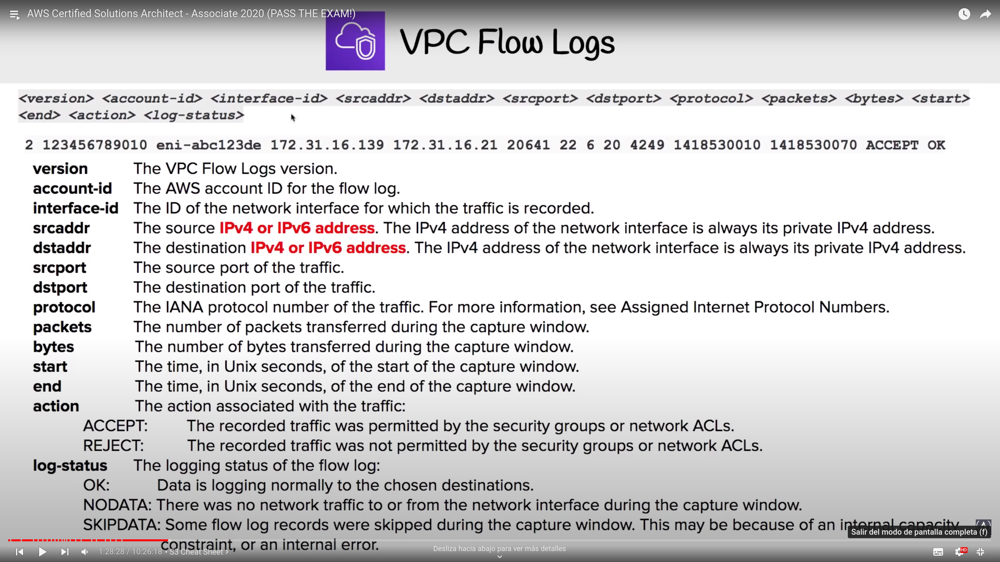
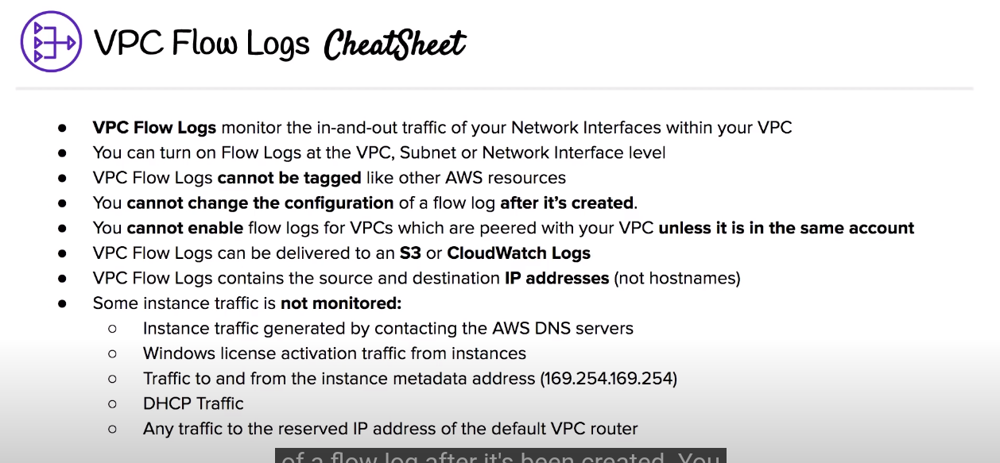
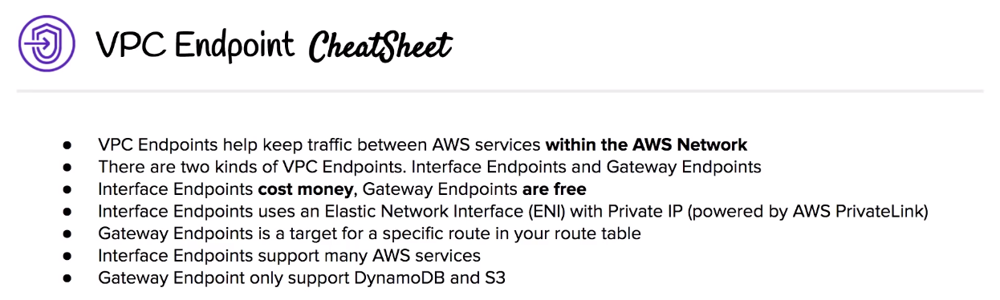

VPC¶
Virtual Private Cloud
Overview¶
Logically isolated section of the AWS Cloud where you can launch AWS resources in a virtual network defined by you, giving you complete control over your virtual networking environment ("personal data center")
Key features¶
- Region specific, 5 VPCs per region maximum
- Each region comes with a default VPC
- 200 subnets by VPC maximum
- VPC allows IPv4 and IPv6 CIDR Blocks (VPC address)
- DNS resolution enabled by default
- DNS hostnames to the instances (disabled by default)
- Default tenancy or dedicated one (dedicated host, more expensive)
Pricing¶
- Free:
- VPCs
- Route tables
- NACLs
- IGWs
- SGs
- Subnets
- VPC Peering
- Costs:
- NAT Gateways
- VPC Endpoints
- VPN Gateway
- Customer Gateway
Default VPC¶
- The goal is allow you to deploy instances immediately.
- IPv4 CIDR block -> 172.31.0.0/16
- /20-sized subnet for each Availability Zone (AZ)
- IGW
- Default SG
- Default NACL
- Default DHCP options set for yout AWS account with your default VPC
- Default route table
Default Everywhere IP (0.0.0.0/0)¶
- Represents all possible IP addresses
- In a IGW route table -> allow all internet access
- In a SG inbound rule -> allow all traffic from internet to our resources
Bastion (deprecated)¶
- EC2 instance which are security harden
- Used to access resources via SSH or RDP that are in a private subnet
- System Manager's Session Manager replaces the need for Bastions
- Guacamole Bastion Host
Direct Connect¶
- Dedicated network connections from on-premises to AWS
- Very fast network (from 50Mbps to 100Gbps)
- Great for high traffic networks. Reliable and secure
Flow Logs¶
- Allow to capture traffic information in-and-out of network interfaces within your VPC
- Created for VPC, subnets and network interfaces
- Log data is stores in CloudWatch Logs, where it can be viewed in detail
Log Breakdown¶
 
Core components¶
Combining these components and services is what makes up your VPC
Internet Gateway (IGW)¶
- Allows VPCs to access to the internet
- Provides a target in VPC route tables for internet-routable traffic
- Perform NAT for instances that have been assigned public IPv4 addresses
- It is required to add a route to the IGW and set the destination to be the default Everywhere IP (0.0.0.0/0)
Routing tables¶
- Used to determine where network traffic is directed
- Each subent in your VPC MUST be associated with a route table and JUST one
- But multiple subnets can be associated with one single route table
Security Groups¶
- Instance-level virtual firewall that controls inbound and outbound traffic EC2 instances
- All traffic is blocked by default, rules only allow traffic.
- Protocol + Port Range + Source IP + Description (optional)
- Instances can belong to multiple Security Groups and Security Groupds can contain multiple EC2 instances
- Security group rules are permissive.
- Use case: allow a IP range, a specific IP, another security group...
- Stateful: if traffic is allowed inbound it is also allowed outbound
- Changes take effect immediately.
- You cannot block specific IP addresses (see Network Access Control List (NACLs)
- Limitations:
- Up to 1000 SGs per Region (default is 2500)
- 60 inbounds and 60 outbound rules per SG
- 16 SGs per Elastic Network interface (ENI, default is 5)
Subnets¶
Private by default (auto-assign public IPv4 address disabled)
Public subnet¶
Private subnet¶
Virtual Private Gateway (VPN Gateway)¶
NAT gateway¶
- NAT instances 100% managed by AWS
- Re-mapping one IP address space into another
- Use case: Give access to the internet to a Private Network (remap private IPs)
- Redundant instances within the selected AZ
- Automatically assigned with a public address
- Route tables for the NAT Gateway MUST be updated by administrator
- 1 NAT gateway per AZ
- Starts at 5 Gbps and scales up to 45Gbps
NAT Instances (legacy)¶
- Individual EC2 instance on public subnet to give access to the internet (MUST exist in a public subnet)
- MUST disable source and destination network checks
- MUST have a route out of the private subnet to the NAT instance
- NAT instance size determinet how much traffic can handle
- High availability can be achieved using:
- Autoscaling Groups
- Multiple subnets in different AZs-
- Automatic failover
- Community AMIs exist to launch NAT instances
- Should not be used as Bastions
VPC Endpoints¶
- Allows you to privately connect VPC with other AWS services
- Instances in the VPC do not require a public IP address to communicate with service resources
- Traffic between your VPC and other services does not leave the AWS network
- Allow reliable and secure communication between services and instances
- Horizontally scalled, redundant and highly available VPC component
- 2 types: Interface Endpoints and Gateway Endpoints
Interface Endpoints¶
- Elastic Network Interfaces (ENI) with private IP address
- Uses AWS PowerLink
- Supports multiple services
Pricing¶
- Internet endpoint per AZ ($/hour): 0.01 -> 24/7 ~7.5$
- 0.01$/GB data processed
Gateway Endpoints¶
- Gateway that is a target for a specific route in yout route table.
- It is FREE
- Only support S3 and DynamoDB

VPC Peering¶
- Allows you to connect VPC between them over a direct network route using private IP addresses
- Instances on peered VPC behave just like they are on the same network
- Connects VPCS same or differents AWS accounts and/or regions
- Star configuration: 1 central VPC, the rest around the central one
- No Transitive Peering -> One to One to connect immediate VPC
- No Overlapping CIDR Blocks
Network Access Control List (NACLs)¶
- VPCs are automatically given a default NACL which allows all outbound and inbound traffic
- Layer of security, acts like a firewall at subnet level
- Denies all traffic by default
- Stateless: any allowed inbound traffic is also allowed outbound
- Subnets an only belong to a single NACL, but a same NACLs can be associated to multiple subnets
- Seems like Linux iptables, allowing or denying incoming and outcoming subnet traffic
- Rule number -> evaluation order from lowest (0) to highest (32766). AWS recommends to work in 10 or 100 increments to deal with new rules addition.
- Use case: block by IP, additional protection in case Security Groups SSH port wass left open